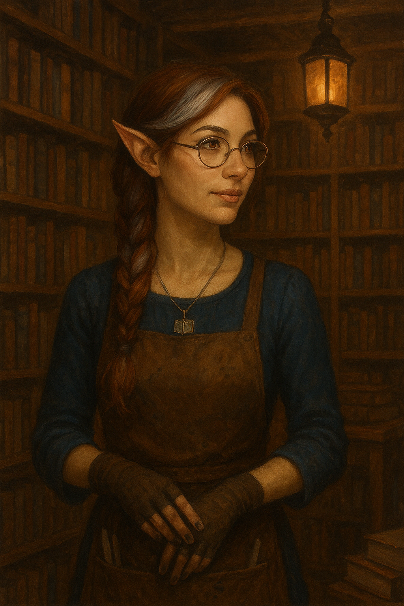
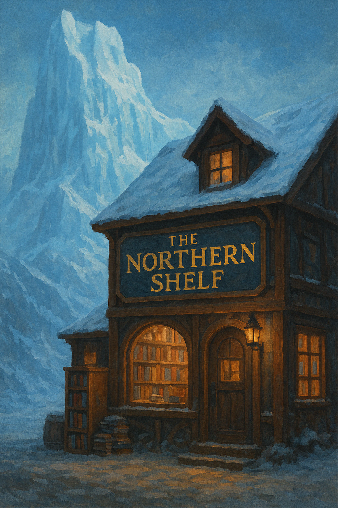

← Back to Fjord's End Summary
Kumari
The Keeper of Stories, Proprietor of The Northern Shelf
Character Overview
Race:
Half-Elf
Age:
87 (appears mid-40s)
Occupation:
Bookseller, Scribe, Lorekeeper
Shop:
The Northern Shelf
Status:
Resident of Fjord's End for 60+ years
Disposition:
Friendly, Knowledgeable, Slightly Mysterious
Physical Description

Kumari is a striking half-elf woman with silver-streaked auburn hair typically worn in a loose braid draped over one shoulder. Her eyes are an unusual shade of amber that seem to catch and hold candlelight, giving them an almost luminous quality when she's reading in her shop's dim interior.
- Height: 5'8", slender build
- Distinctive Features: Reading spectacles perched on her nose (though she doesn't really need them), ink stains permanently marking her fingers, a small silver pendant shaped like an open book
- Typical Attire: Practical wool dresses in deep blues and greens, a leather apron covered in pockets for quills and bookmarks, fingerless gloves even in summer
- Voice: Soft and melodious, with a tendency to quote literature mid-conversation
- Mannerisms: Constantly touching books as she passes them, has a habit of tilting her head when listening as if hearing something others cannot
The Northern Shelf
Bookshop Description

The shop occupies a two-story timber building near the village center, its windows glowing warmly even on the darkest winter nights. A hand-painted sign hangs above the door depicting mountain peaks with books arranged like shelves between them, with the words "The Northern Shelf" carved in elegant script.
Exterior
- Weathered timber with blue-painted shutters
- Large bay window displaying select rare volumes
- Wind chimes made from old quill nibs hanging by the door
- Small herb garden to one side (Kumari grows plants used in papermaking and ink)
- A ginger cat named Codex often sunbathes in the window
Interior - Ground Floor
- Main Room: Floor-to-ceiling shelves packed with books of every size and condition
- Reading Nook: Comfortable chairs by a pot-bellied stove, free tea for browsers
- Counter: Cluttered with current projects, orders, and Kumari's personal reading
- Scribe's Desk: Where Kumari copies texts and takes commissioned work
- Atmosphere: Smells of old paper, leather bindings, ink, and the faint scent of pine from the stove
- Lighting: Dozens of candles and oil lamps, creating a warm, intimate glow
Interior - Upper Floor
- Rare Books Section: Climate-controlled by minor magic, houses valuable and delicate volumes
- Kumari's Workshop: For bookbinding, restoration, and papermaking
- Private Study: Kumari's personal collection and research materials
- Living Quarters: Small apartment where Kumari resides
Background & History
Early Life
Kumari was born in a coastal city far to the south, the daughter of a human merchant and an elven scholar. She showed an early aptitude for languages and an insatiable appetite for stories. Her mother taught her the art of calligraphy and bookbinding, while her father's trade routes exposed her to tales from across the world.
The Wandering Years
In her twenties, Kumari spent nearly three decades traveling, working as a scribe, translator, and occasionally a teacher. She collected books wherever she went, slowly building what would become her shop's foundation. During this time, she also studied minor magic related to preservation, translation, and memory.
Arrival at Fjord's End
Sixty years ago, Kumari arrived in Fjord's End on a ship carrying a cargo of salvaged books from a flooded monastery. The ship's captain intended to sell them for scrap, but Kumari purchased the entire lot. Unable to afford passage elsewhere with her remaining coin, she stayed in the village, initially planning to leave once she'd sold enough books to fund her travels.
She never left.
The isolation, the dramatic landscape, and—though she won't admit it—the loneliness of the frontier folk who hungered for stories and knowledge, convinced her to make Fjord's End her home. She established The Northern Shelf in an abandoned storage house and has been the village's keeper of knowledge ever since.
Personality & Traits
Character Traits
- Welcoming: Greets every customer warmly, remembers their reading preferences
- Knowledgeable: Vast repository of information on countless subjects
- Patient: Will spend hours helping someone find the right book
- Curious: Asks thoughtful questions and listens intently to answers
- Protective: Fiercely guards her rarest books but generous with common knowledge
- Slightly Eccentric: Talks to books, has strong opinions about proper bookmark usage
- Observant: Notices details others miss, excellent judge of character
- Stubborn: Refuses to stock books she deems poorly written or morally objectionable
Quirks & Habits
- Quotes literature in conversation, often obscure passages
- Always has at least three bookmarks on her person
- Makes her own ink in small batches, each with unique properties
- Keeps a detailed journal of every book that passes through her shop
- Offers reading recommendations based on people's "aura" rather than stated preferences
- Has named many of her favorite books and addresses them by name
- Refuses to work on Tuesdays—her "reading day"
Services Offered
The Frozen Page's Inventory
General Stock
- Adventure novels and hero tales (popular with younger villagers)
- Navigation charts and sailing guides
- Practical books on crafts, farming, and survival
- Poetry collections and songbooks
- Children's picture books and fables
- Historical accounts of the region
- Religious texts from various faiths
- Blank journals and ledgers
Rare & Special Items
- Ancient tomes on giant lore and history
- Maps of long-lost settlements and ruins
- Spellbooks (low-level, for study only—not for sale to untrained)
- Illuminated manuscripts from fallen monasteries
- First-edition works by famous authors
- Books in exotic or dead languages
- Texts on dragon behavior and ecology
- Treatises on northern weather magic and ice lore
Services & Pricing
- Book Sales: 5 cp to 500 gp depending on rarity
- Scribing: 1 sp per page for simple copying, more for complex work
- Translation: 5 gp per document (knows 8 languages fluently)
- Research Assistance: 10 gp per day plus expenses
- Book Restoration: Negotiable based on damage
- Custom Journals: 2-15 gp depending on quality and features
- Letter Writing: 5 cp for simple letters, helps the illiterate communicate
- Map Copying: 1 gp per map
Special Services
- Book Identification: Free for customers, can detect magical texts
- Reading Recommendations: Free, uncannily accurate
- Story Hour: Weekly readings for children (and adults), no charge
- Message Delivery: Will hold and deliver messages for regulars
Magical Abilities
Hidden Talents [DM Information]
While Kumari presents herself as merely a well-read bookseller, she possesses minor magical abilities related to knowledge and preservation:
Known Spells & Abilities
- Comprehend Languages: Can understand any written text (1/day)
- Detect Magic: Primarily uses to identify magical books (at will)
- Mending: Repairs damaged pages and bindings (at will)
- Prestidigitation: For cleaning, lighting candles, etc. (at will)
- Illusory Script: Can hide messages in seemingly mundane texts (1/day)
- Gentle Repose: Modified version that preserves books indefinitely (ritual)
- Identify: For magical items, requires book about the item type (1/day)
Special Ability: The Library's Memory
Kumari has an eidetic memory for anything she's read. She can recall passages verbatim from thousands of books, making her an invaluable source of obscure information. However, she's careful not to reveal the full extent of this ability, preferring to appear merely "well-read."
Magical Items in Her Possession
- Spectacles of Text Reading: Allow her to read faded, damaged, or magically obscured text
- Endless Inkwell: Never runs dry, produces ink in various colors
- Quill of the Ready Scribe: Writes faster and more accurately than mundane quills
- Bookmark of Holding: Can store one book in an extradimensional space
- Candle of Inviting: Creates a calming aura in 20-foot radius
Relationships & Connections
Village Relationships
Friendly Relations
- Ingvar & Ingrid Runestone: Regular customers; Kumari taught Ingrid to read as a child
- Kira Brightwater: Fellow scholar, they discuss magical theory over tea
- Tormund Stormwatch: Brings her rare maps and charts he finds on expeditions
- Village Children: They adore her story hours and she knows all their names
- Captain Brenna: Brings books from distant ports, Kumari's main supply source
Complex Relationships
- Magnus Irongrip: Mutual respect; he knows she knows more than she reveals. She's intensely interested in his family's history and has offered to help him research Snowpiercer and Giantspire Peak multiple times.
- Skylark: They have an understanding—she provides information discreetly, asks no questions about his Harper activities. He brings her rare books as payment.
- Sven Stormcaller: He's suspicious of her magic and learning, but appreciates her literacy services for merchants
External Connections
- Candlekeep: Corresponds with scholars there, occasionally trades books
- Traveling Merchants: Network of book dealers and collectors across the region
- Former Students: People she taught to read who've moved away
Secrets & Mysteries
What Kumari Knows [DM Information]
After sixty years in Fjord's End and a lifetime of reading, Kumari knows more about the region's history and mysteries than almost anyone alive:
- Giantspire Peak: Has three different historical accounts of the dragon's slaying, including one written by a dwarf who was there
- The Cursed Pool: Possesses an ancient text describing similar giant-cursed sites throughout the north
- Red Wizards: Has read extensively about Thayan methods and can identify their magical signature
- Local Lore: Knows every legend, myth, and ghost story about the area
- Hidden Locations: Old maps in her collection show ruins and sites long forgotten
- Magnus's Lineage: Has researched his family tree extensively and knows details even he doesn't
- The Harpers: Suspects Skylark's true affiliation, has helped him without being asked to join
Kumari's Own Secret
Kumari is writing a comprehensive history of the northern reaches, a project she's been working on for forty years. The manuscript is nearly complete and contains information that would be invaluable—and dangerous—in the wrong hands. She keeps it hidden in her private study, magically warded against theft and fire.
Additionally, she's in possession of a partial map that supposedly shows the location of the dragon's hoard in Giantspire Peak. She's never acted on it, but she keeps it carefully preserved, waiting for the right people to entrust with such knowledge.
Codex - The Shop Cat
Kumari's Feline Companion
Codex is a large, fluffy ginger cat with white paws and a magnificent plumed tail. He's approximately twelve years old and has been with Kumari since he was a kitten found mewing in a crate of books delivered from a monastery.
Personality
- Imperious and dignified, treats The Northern Shelf as his personal domain
- Excellent judge of character—hisses at untrustworthy customers
- Has favorite sleeping spots on different shelves, rotates seasonally
- Allows children to pet him but maintains strict boundaries with adults
- Known to knock books off shelves, but only ones Kumari should reread
Special Trait
Codex seems unnaturally intelligent, even for a cat. Some swear he understands conversations. Kumari insists he's "just perceptive," but there's something uncanny about his amber eyes. [DM Note: Codex may be a familiar, awakened animal, or simply a very clever cat—choose based on your campaign needs]
Plot Hooks & Quest Ideas
Ways to Involve Kumari
Information & Research
- Lore Keeper: PCs need information about ancient sites, creatures, or magic—Kumari has books on the subject
- Translation Services: Party finds a text in an unknown language; Kumari can translate for a price
- Magical Text: PCs acquire a spellbook or magical tome; Kumari can identify it and possibly teach them its secrets
- Historical Research: Investigating Giantspire Peak, the Cursed Pool, or other sites? Kumari has relevant texts
Personal Quests
- The Missing Shipment: A book order from Candlekeep never arrived; Kumari hires PCs to investigate
- Rare Book Recovery: She knows the location of a valuable tome in dangerous ruins; offers to share information from it in exchange for retrieval
- The Cursed Chronicle: A book in her shop is causing strange phenomena; needs help identifying and neutralizing the curse
- The Manuscript Thief: Someone's trying to steal her life's work; she needs protection and help finding who's behind it
Romance & Personal Connections
- The Lost Love: Kumari receives a letter from someone from her past; old feelings resurface, complications ensue
- Teaching Moment: An illiterate PC wants to learn to read; Kumari offers gentle, patient instruction
- Shared Knowledge: A PC with scholarly interests finds a mentor and friend in Kumari
- Book Club: Kumari starts a reading group; participating reveals character development opportunities
Danger & Intrigue
- Red Wizard Interest: Thayan agents learn of her rare magical texts and come to acquire them by any means
- The Forbidden Book: Kumari accidentally acquires a dangerous necromantic text; it's corrupting reality around it
- Memory Theft: A creature is stealing people's memories of stories; Kumari is a prime target
- The Dragon Map: If PCs prove trustworthy, she reveals the map to Giantspire's hoard
Roleplaying Kumari
Voice & Mannerisms
"Ah, you seek knowledge of the old ways? How delightful. 'Knowledge is a treasure, but practice is the key to it,' as the saying goes. Come, I have just the volume..."
Speech Patterns
- Speaks in complete, well-constructed sentences
- Frequently uses literary quotes and proverbs
- Gentle, encouraging tone when teaching
- Becomes passionate when discussing books or stories
- Uses book metaphors ("That's a chapter best left unread," "Let's not skip to the ending")
Body Language
- Touches books affectionately as she passes shelves
- Adjusts her spectacles when thinking (even though she doesn't need them)
- Has ink-stained fingers she sometimes gestures with when excited
- Tends to pause mid-conversation to reorganize a shelf
- Listens with complete attention, often leaning forward slightly
Sample Dialogue
Meeting PCs for the first time:
"Welcome to The Northern Shelf! I'm Kumari. First time? Wonderful! Every reader's journey begins with a single page. Now, what sort of stories call to you? Adventures? Histories? Or perhaps something more... esoteric?"
When asked about Giantspire Peak:
"Ah, the mountain. Yes, I have several texts about it. Dragons, dwarves, and tragedy—all the elements of a grand epic. Though I wonder, are you seeking entertainment, or answers? The price is different for each."
If PCs are rude or careless with books:
"Please. These pages have survived longer than kingdoms. Let's show them the respect they deserve, shall we? 'He who damages a book kills reason itself,' or so wrote Richard de Bury in 1344."
When revealing something important:
"I've held this knowledge for many years, waiting for the right people. I believe you might be those people. But remember—'with great knowledge comes great responsibility.' Are you prepared for what you might learn?"
DM Notes
Using Kumari in Your Campaign
Role in Fjord's End
- Information broker and quest giver who never leaves her shop
- Provides historical context and foreshadowing through books
- Safe, cozy NPC for downtime and character development
- Bridge between action and research aspects of the campaign
- Can seed rumors, leads, and plot hooks through her inventory
Balancing Her Knowledge
Kumari knows a lot, but information should come at a cost:
- Gold for rare books or extensive research
- Favors (retrieve a book, protect a shipment)
- Time (research takes days)
- Trust (she won't help those who've proven untrustworthy)
- Sometimes she simply doesn't have the information, no matter how much PCs pay
The Northern Shelf as a Safe Space
The bookshop can serve as a sanctuary in the campaign—a place where violence is unthinkable, where enemies might briefly coexist while browsing, where weary adventurers can rest without fear. Kumari's Candle of Inviting reinforces this atmosphere.
Advancement Opportunity
If a PC shows genuine interest in scholarship, Kumari might take them under her wing, offering training in Arcana, History, or even teaching them spells related to knowledge and books.
← Back to Fjord's End Summary